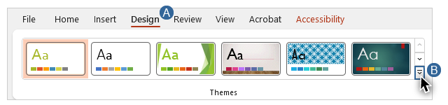
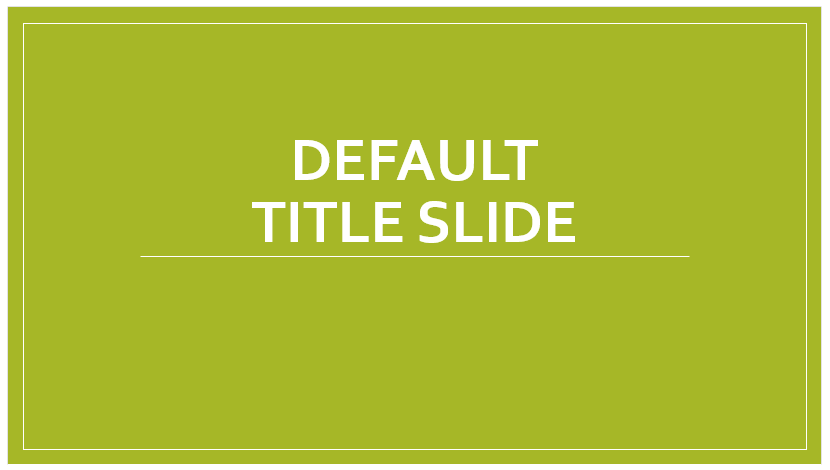
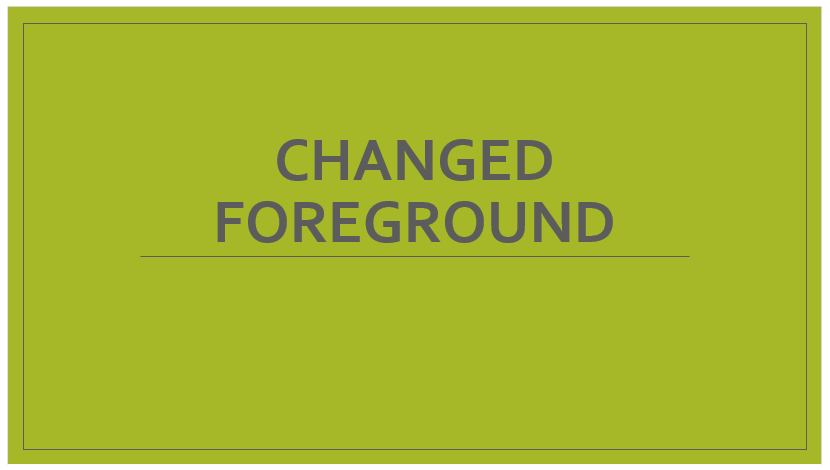
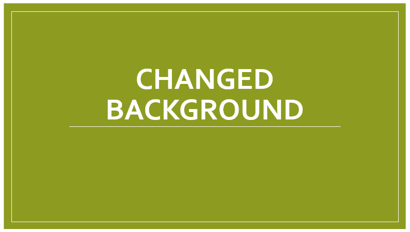
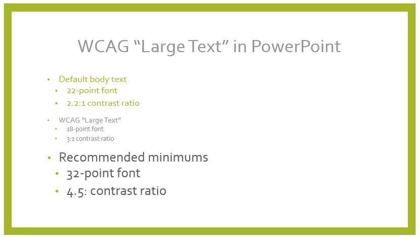
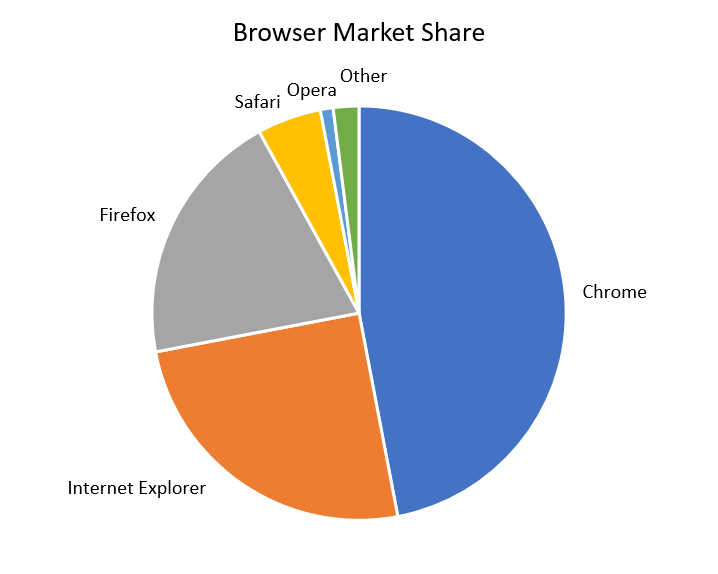

Video
Example File
Guide
Contrast: Part 2
Contrast issues are often more common in PowerPoint presentations. In Word, the default text color is usually black, the default background is usually white, and many of the built-in Themes meet WCAG contrast requirements. In PowerPoint, text and backgrounds appear in a wide variety of colors and many of the Themes do not meet contrast requirements. PowerPoint presentations are also more likely to contain graphical objects such as charts and shapes. The parts of an object that provide visual information may need to meet a minimum contrast requirement.
Objectives
- Explain why a PowerPoint Theme with unknown contrast ratios must be tested with a third-party tool.
- State the recommended minimum contrast ratio for text in a presentation.
- Describe when components of a graphical object must meet a contrast requirement.
Check Accessibility Failures in PowerPoint
While most contrast issues are automatically detected in Word documents, the Check Accessibility tool fails to identify most contrast issues in PowerPoint presentations. It may flag some issues, like contrast in table headers, but it does not test the contrast of Title and body text, even if the slide background is a solid color.
I’ll open the example presentation in PowerPoint running on Windows. I’ll:
- Select the DESIGN tab on the Ribbon.
- Click the “More” button to open the Themes Gallery.

This example file is using the “Basis” theme, which has a background with a solid color: olive green. To see if PowerPoint detects any contrast issues, I’ll navigate to the REVIEW tab and click on the Check Accessibility tool. The Accessibility pane opens and states that no accessibility issues have been found.
Evaluating and Repairing Contrast Issues
Colour Contrast Analyser
I’ll open up the Colour Contrast Analyser to check the contrast ratio between the white text and the olive green background on Slide 1.

I’ll use the foreground color picker on the text, and the other color picker on the background. The contrast ratio is 2.2:1, below the 3:1 minimum required for large text.
Making adjustments
I can meet the minimum requirement for contrast by making adjustments to the colors of the foreground elements, the background elements, or both. In Slide 2, I’ve kept the original color for the background elements and changed the foreground elements to a dark gray.

In Slide 3 I’ve kept the white foreground elements and changed the background elements to a darker shade of green.

Background images and gradients
Many PowerPoint templates use background images and gradients that make testing contrast even more important. When testing these non-solid backgrounds, test the parts of the slide that look like they have the lowest levels of contrast.
Text size and contrast recommendations
Slide 4 illustrates that the size of “large text” as defined by WCAG—18 point, or 14 point and bold—is too small for most slides.

The first series of bullet points shows the default body text for this theme. It is 22-point font with a 2.2:1 contrast ratio. The second group of bullets meets WCAG’s minimum contrast requirements for large text: an 18-point font with a minimum contrast ratio of 3:1. The last cluster of bullets shows our recommended minimums for size and contrast in presentations: 32-point font with a 4.5:1 contrast ratio. The amount of contrast in the elements of a presentation should be determined by the context for which it is being developed. For example, text in a presentation delivered through a projector should have significantly more contrast than text in a presentation delivered on a large, wall-mounted computer monitor.
Graphical Objects
WCAG also has contrast requirements for graphical objects. When distinguishing between the color values of adjacent components is required to understand an image’s content, there must be a minimum contrast ratio of 3:1. For example, this pie chart of Browser Market Share has labels for the different brands of browser. But it does not have labels that indicate what percentage each “slice” is.

The pie pieces are separated from each other by a white border. There must be at least a 3:1 contrast between each slice’s color and the white border. Information on testing graphical objects and making changes to meet this requirement is provided in the Charts section of Module 5.
Now that you have learned how to address contrast issues in PowerPoint and Word, you are ready to learn how color reliance in documents impacts users with some types of visual disabilities, and how to prevent this.